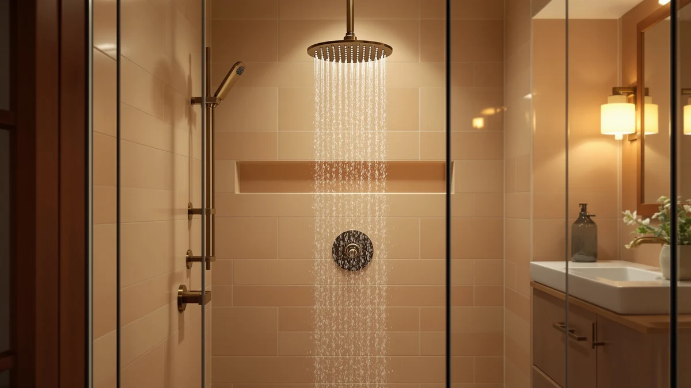

How to Clean Shower Heads of Limescale: Complete Guide (2026)
Prices and picks verified as of October 2026. Independent, reader-supported reviews.


Things to Know Before You Buy
- White vinegar dissolves calcium and magnesium deposits without damaging most chrome, brushed nickel, or matte black finishes when used at full strength for under two hours.
- A soak clears limescale from the body of the shower head, but you still need to clear each nozzle hole by hand for an even spray.
- Homes on hard water tend to rebuild limescale within two to three months, so plan to repeat this process on a schedule rather than once.
- Avoid metal scouring pads or wire brushes on finished surfaces. They scratch the coating and give new limescale more texture to grip.
- If a shower head is more than five years old and still clogs after cleaning, the flow restrictor or nozzles may be damaged beyond what a soak can fix.
Learning how to clean shower heads of limescale is often the quickest fix for weak, uneven water pressure in homes with hard water. Mineral deposits build up inside the nozzles over weeks of use, narrowing the holes until the spray pattern turns patchy or the stream slows to a trickle. You do not need a new shower head or a plumber visit to fix it.
Hard water affects most US households, and the calcium and magnesium it carries settles fastest around narrow openings like shower nozzles. Left alone, that buildup hardens into a chalky crust that no amount of water pressure can force through. This guide walks through five steps, drawn from common plumbing practice and verified owner reviews, that take a clogged shower head from removal to a clean, even spray. It also covers the mistakes that undo that work, and a few shower heads built to resist scale in the first place.
What You'll Need
- Supplies: distilled white vinegar, baking soda, and PTFE plumber's tape
- Tools: an adjustable wrench or slip-joint pliers and a soft-bristle cleaning brush
Step 1: Remove the Shower Head From the Arm
Start by unscrewing the shower head counterclockwise where it meets the shower arm. Most heads turn by hand, but limescale can cement the threads together over time. If it will not budge, wrap the connection in a cloth to protect the finish and grip it with an adjustable wrench or slip-joint pliers.
Set the exposed threads on the shower arm aside, and keep the rubber or fiber washer somewhere safe. You will need both again once the shower head is clean. Removing the head completely lets vinegar reach every nozzle instead of only the visible surface, which is the difference between a quick rinse and clearing limescale from inside the unit.
Step 2: Mix a Vinegar Soaking Solution
Pour equal parts distilled white vinegar and warm water into a bowl, measuring cup, or resealable plastic bag, enough to fully submerge the shower head. Straight vinegar works faster on heavy limescale, but a one-to-one dilution is gentle enough for finishes like brushed nickel or matte black and still breaks down calcium deposits within an hour.
For stubborn buildup, stir in two tablespoons of baking soda. The reaction fizzes briefly and helps loosen crust that plain vinegar struggles to reach on its own. Skip this step on polished brass or gold-tone fixtures, where the reaction can dull the finish over repeated use.
Step 3: Submerge the Shower Head for 30 to 60 Minutes
Lower the shower head face-down into the solution so the nozzle plate sits fully underwater, or seal it inside a vinegar-filled bag secured with a rubber band if you are cleaning it while it is still attached to the arm. Light buildup clears in about 30 minutes. Heavier, chalky limescale that has been building for six months or longer can take a full hour, sometimes two.
Check the water partway through. If it has turned cloudy and you can see flakes of mineral deposit settling at the bottom, the soak is working. A second, fresh batch of vinegar after the first hour speeds things along on shower heads that have gone a year or more without cleaning.
Step 4: Scrub the Nozzles and Clear Blocked Holes
Pull the shower head out of the solution and scrub the nozzle plate with a soft-bristle brush. An old toothbrush does the job well. Work in small circles to loosen any crust the soak softened but did not fully dissolve, paying attention to the rubber or silicone nubs that line most modern nozzle plates.
For individual holes that are still blocked, push a toothpick or a straightened paperclip gently through each one. Avoid metal pins or needles on plastic nozzle plates since they can widen the hole and change your spray pattern permanently. Rinse the whole head under running water once every nozzle sprays freely.
Step 5: Reattach the Shower Head and Test the Flow
Wrap the shower arm threads clockwise with two or three turns of PTFE plumber's tape, then thread the shower head back on by hand until it is snug. Hand-tight is usually enough. Over-tightening with a wrench can crack plastic housings or strip the threads.
Turn the water on and check the spray pattern at full pressure. Every nozzle should push out a steady, even stream. If a few holes still trickle, the shower head likely needs a second soak. If the pattern is uneven across the entire plate rather than a handful of nozzles, the internal flow restrictor may be the real source of the limescale clog, not the visible plate.
Common Mistakes to Avoid
The most common mistake when clearing limescale from a shower head is scrubbing with steel wool or a wire brush. Abrasive metal scratches chrome, brushed nickel, and matte black finishes, and the scratches give future mineral deposits more surface area to grip, so the buildup returns faster than before.
Skipping the soak and going straight to scrubbing is another shortcut that backfires. Dry limescale is hard and chalky, and forcing a brush or pick through it before it softens can crack rubber nozzle nubs or snap a toothpick off inside the hole. Give the vinegar the full 30 to 60 minutes it needs before you touch the nozzle plate.
Using full-strength vinegar on polished brass, gold-tone, or oil-rubbed bronze finishes is a mistake many homeowners do not discover until the coating dulls. Dilute the solution for anything beyond standard chrome or stainless steel.
Forgetting the plumber's tape when reattaching the head is a small step with an outsized consequence. Without it, the connection can leak at the threads within days, and that trapped moisture accelerates the next round of limescale buildup rather than preventing it.
Finally, treating this as a one-time fix ignores how hard water works. If your water supply carries high mineral content, limescale returns within two to three months no matter how thoroughly you clean, so the real fix is a repeat schedule, or a shower head designed to resist buildup in the first place.
Our Top Picks
If scrubbing limescale off the same shower head every few months has worn thin, a model with wide, flexible nozzles or a built-in filter can cut down on how often buildup forms. The picks below range from a budget-friendly high-pressure head to a full rain system, each chosen for nozzle designs that are easier to wipe clean between deep soaks.

Editor’s Pick
SR SUN RISE 12 Inch
The 304 stainless steel head pairs with silicone nozzles that owners say wipe clean of mineral deposits with a fingertip, cutting down on how often a full vinegar soak is needed.
$199.97
Check Price on Amazon
Best Value
High Pressure Shower Head HOPOPRO
Its 66 nozzles are small and closely packed, so a full vinegar soak is still worth doing every few months, but the ABS plastic body resists the rust that can trap limescale around metal threads.
$18.99
Check Price on Amazon
Premium Choice
SR SUN RISE 12 Inch
The ultra-thin nozzle design pushes water through a narrower path for a stronger spray at low pressure, and reviewers report the flat panel is simpler to wipe down than deeper, recessed nozzle plates.
$209.89
Check Price on AmazonFrequently Asked Questions
How often should you clean a shower head of limescale?
In homes with hard water, plan to clean a shower head every two to three months. If your water is softened or you notice no drop in pressure, stretching that to twice a year is usually fine.
Does vinegar damage shower head finishes?
Diluted white vinegar is safe on chrome, brushed nickel, and stainless steel for soaks under two hours. Polished brass, gold-tone, and oil-rubbed bronze finishes are more sensitive, so dilute the solution further or shorten the soak time to avoid dulling the coating.
Can you clean a shower head without removing it from the shower arm?
Yes. Fill a sandwich bag with the vinegar solution, slide it up over the shower head, and secure it with a rubber band so the nozzle plate stays submerged. It takes the same 30 to 60 minutes as soaking the head in a bowl, with less risk of stripping the threads during removal.
What if soaking does not remove all the limescale?
Repeat the soak with a fresh batch of vinegar, or add baking soda to the solution for extra scrubbing power. If individual nozzle holes are still blocked after two soaks, clear them by hand with a toothpick rather than extending the soak time further.
Does a water softener prevent limescale from building up on a shower head?
A whole-house water softener reduces the calcium and magnesium that cause limescale throughout your plumbing, including at the shower head. A point-of-use filtered shower head targets the same minerals without the cost of a whole-house system, though neither option eliminates the need for occasional cleaning.
Verdict
Clearing limescale from a shower head comes down to patience more than tools: a vinegar soak of 30 to 60 minutes, a soft brush, and a few minutes with a toothpick on any nozzle that is still blocked. Skip the steel wool, give the soak its full time, and reseal the threads with plumber's tape when you reattach the head, and most clogged nozzles return to full pressure in under an hour.
Because hard water rebuilds limescale within two to three months in most homes, treat this as a routine task rather than a one-time repair. If you are shopping for a replacement in the meantime, the SR SUN RISE 12 Inch is a solid pick here: owners say its nozzles wipe clean by hand between soaks, so you spend less time repeating the steps above.